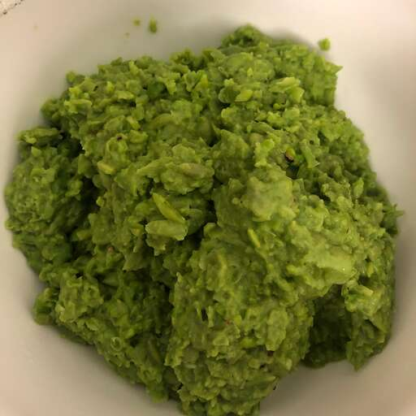

Mushy Peas
Preamble
I'm full from the shrimp egg foo young, and I don't feel like making dinner tonight, kids, so you're getting mushy peas.
Description
I don't feel like describing mushy peas.
Ingredients
This is taken from allrecipes.com by the way:
- One 10 ounce package frozen green peas
¼ cup heavy creamI actually like my peas to be as mushy as possible, so let's make that an even 1 cup.
- 1 tablespoon butter
- ½ teaspoon salt
- ½ teasppon freshly ground black pepper
- Let's also throw in 1 cup of water, just to make it good and mushy. Sink water is fine.
steps
I have a splitting headache.